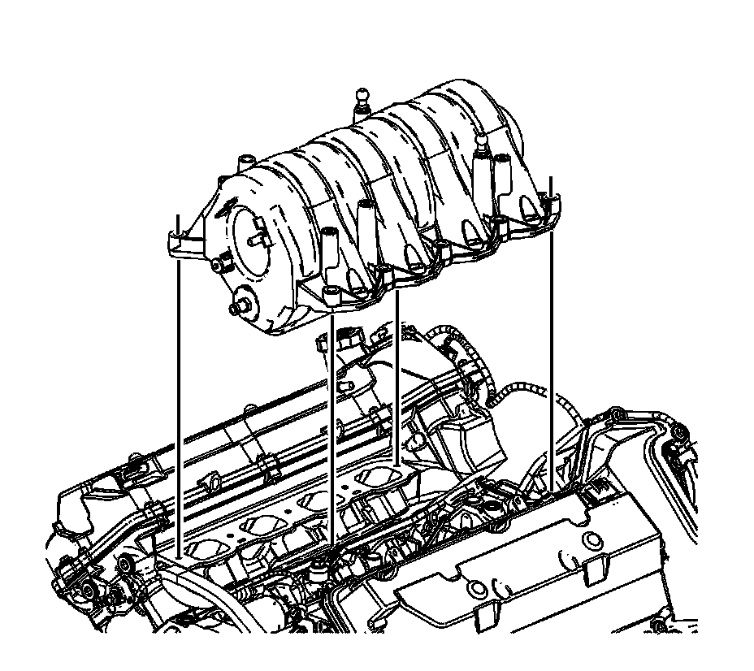
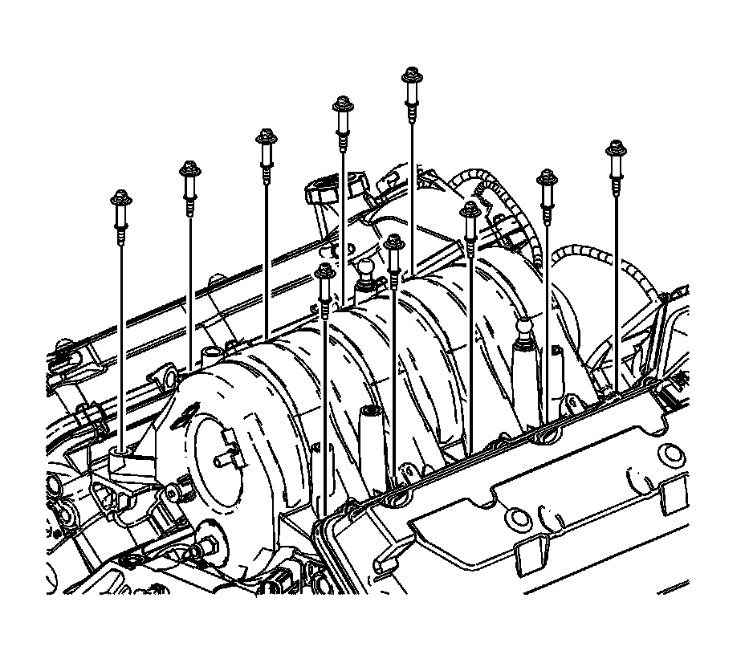
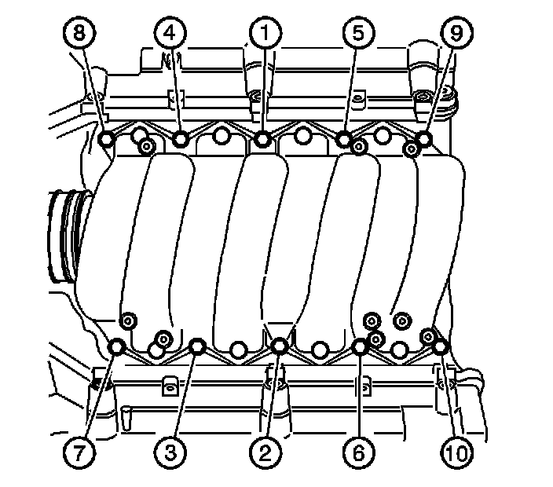
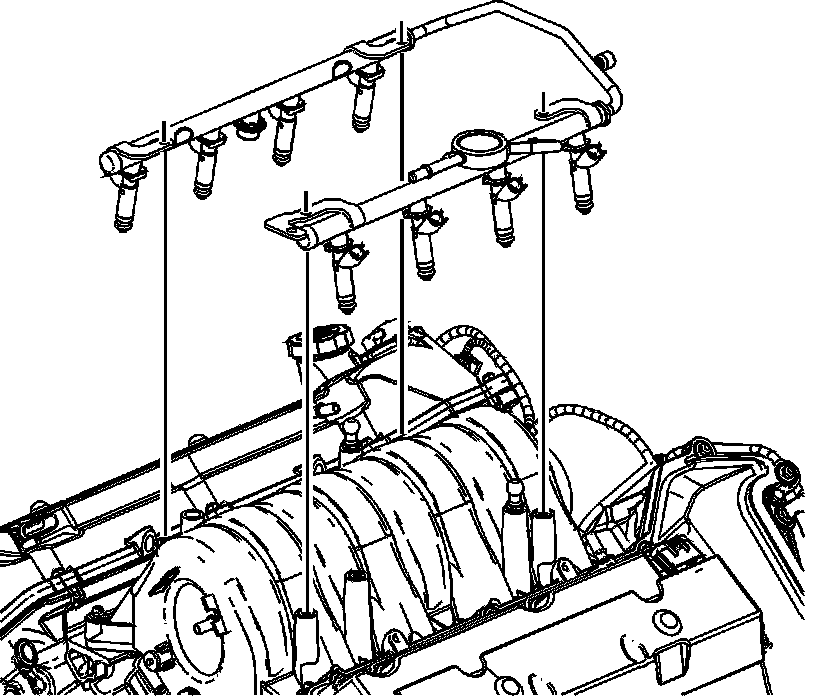
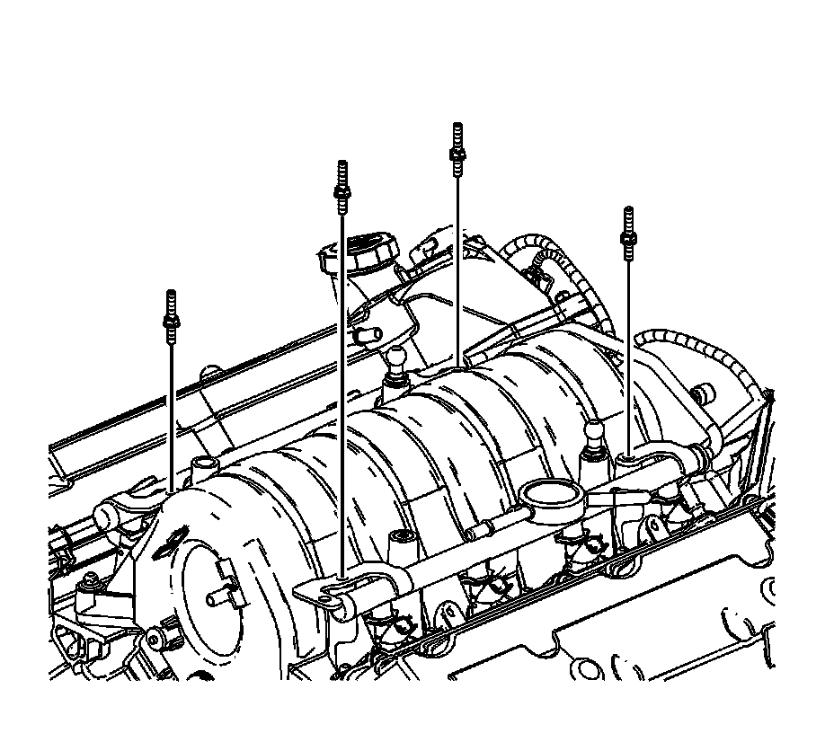
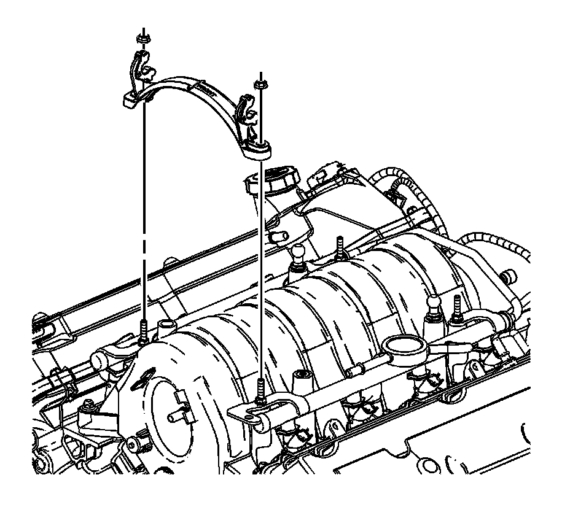
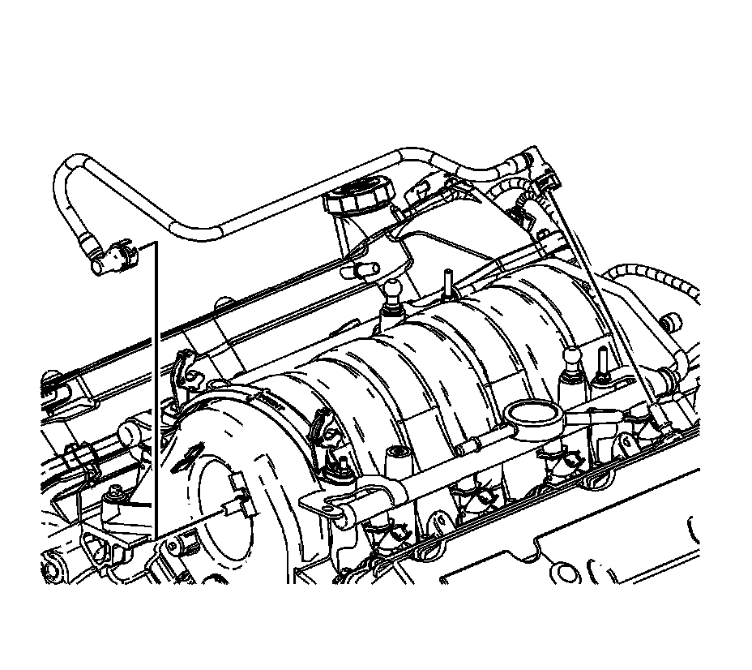
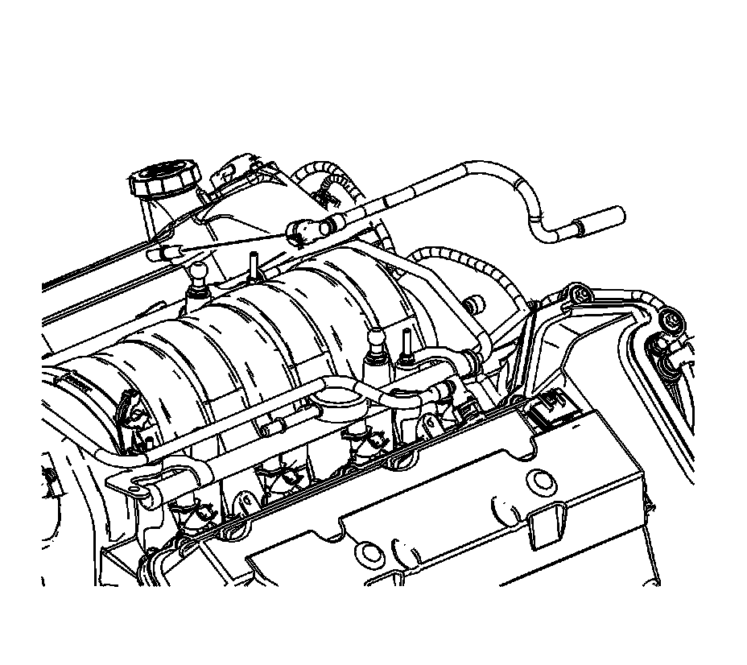

131. Intake Manifold Installation
Intake Manifold Installation

1. Ensure the NEW gaskets are installed in the intake manifold.
2. Place the intake manifold in position.

3. Loosely install the 10 bolts attaching the intake manifold to the cylinder heads.

Notice: Refer to Fastener Notice (Fastener Notice) .
4. Tighten the intake manifold bolts in sequence (1-10).
Tighten the intake manifold bolts to 10 N.m (89 lb in).
5. Lubricate the intake manifold fuel injector bores with light mineral oil GM P/N 12345610, (Canadian P/N 993193), clean engine oil or equivalent.

Important: DO NOT force the injectors into position.
6. Install the entire fuel rail and injector assembly into the intake manifold by pressing the fuel rail and injector simultaneously into the correct position.

7. Install the bolts attaching the fuel rail to the intake manifold.
Tighten the fuel rail bolts to 10 N.m (89 lb in).

8. Install the sight shield bracket.
9. Install the sight shield bracket nuts.
Tighten the sight shield bracket nuts to 10 N.m (89 lb in).

10. Connect the positive crankcase ventilation (PCV) dirty air tube to the camshaft cover.

11. Connect the PCV fresh air tube to the camshaft cover.